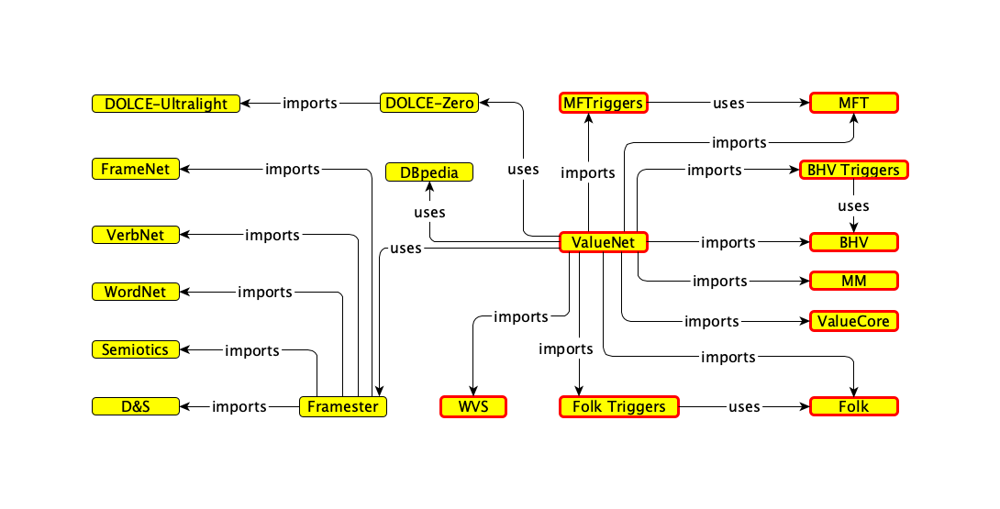

Values Ontology
Moral & cultural values — modular ontology
A modular ontology of moral and cultural values, integrating Schwartz's Basic Human Values, Graham and Haidt's Moral Foundations Theory, and Curry's Moral Molecules. Each value is modeled as a conceptual frame, aligned to DOLCE, and built with reusable Ontology Design Patterns as part of the Framester knowledge graph.
View on GitHub →